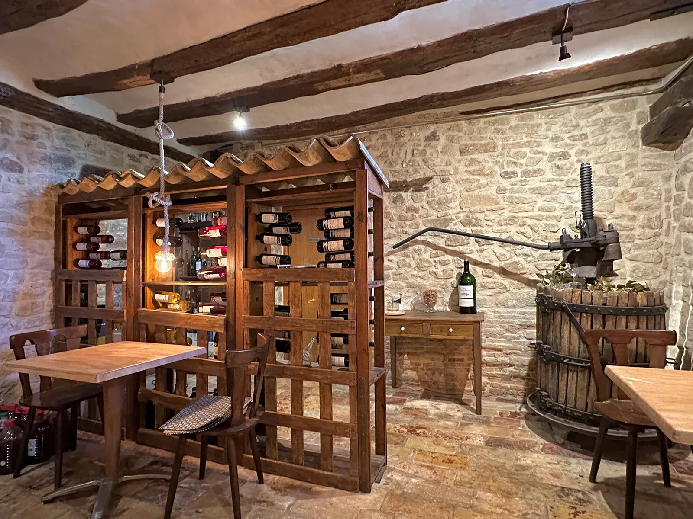
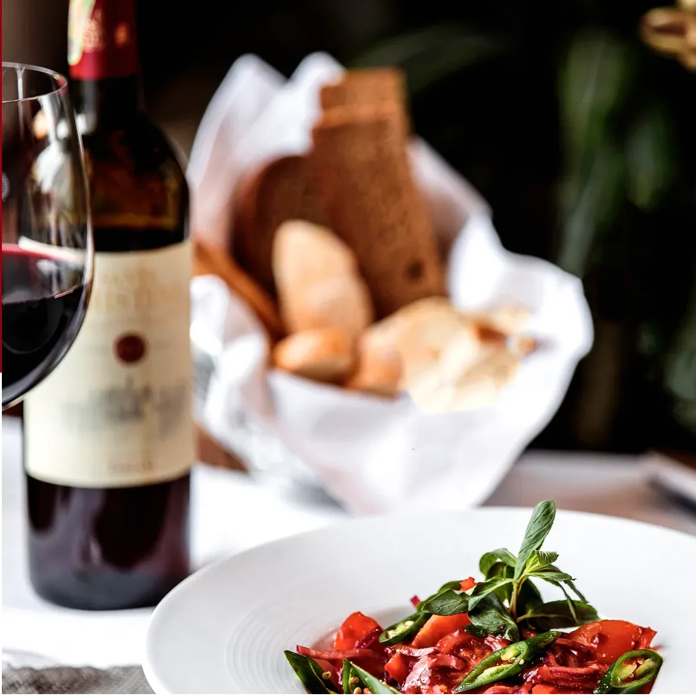

Tras un descanso reparador, te mereces un buen desayuno para empezar el día. Las propuestas pasan desde el desayuno básico a los más completos, todos acompañados de café, infusión o cacao.
El desayuno se sirve a partir de las 9 h.
Dulce
Tostadas de pan con aceite o mantequilla y mermelada, fruta, cereales y repostería casera, yogur, zumo natural.
Serrano
Jamón con tostadas de pan con tomate, zumo natural u otra bebida y fruta.
Campero
Tortilla con huevos frescos del corral y tostadas de pan con tomate y fruta.


Servicio
Cenas
Navarra es una tierra de montaña y huerta. Cultivos de temporada como los espárragos, las alcachofas, los pimientos o las setas son nuestros ingredientes preferidos para la degustación de raciones más elaboradas o de picoteo. La propuesta de la Casa es la de una cocina ligera donde el producto local sea el protagonista.